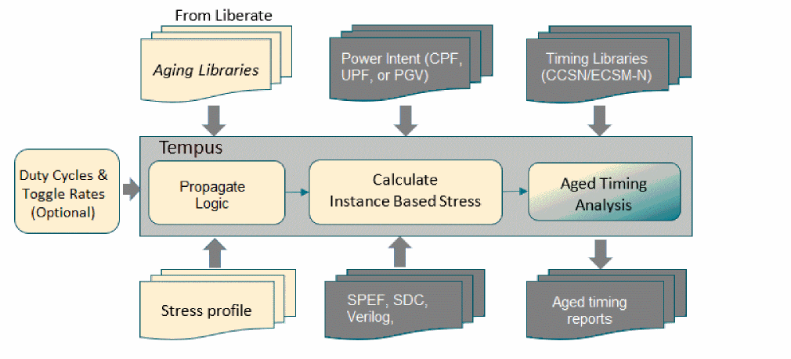
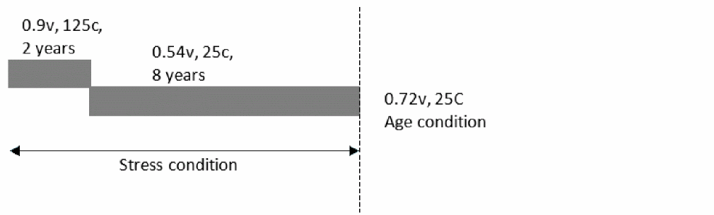
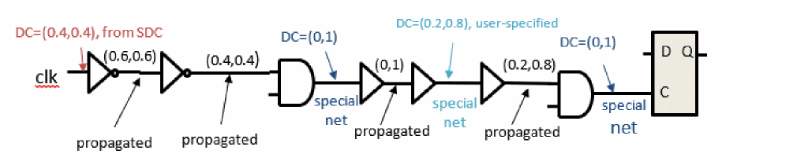
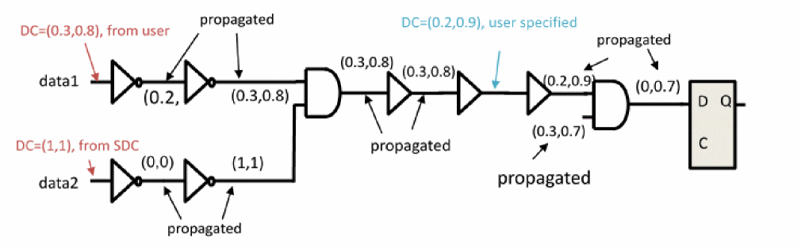

Tempus Aging-Aware STA
Input Requirements
The following diagram shows the input requirements for performing aging-aware STA.

Fresh and Aged Libraries
The fresh libraries refer to the timing libraries in CCSN or ECSM-N format used in regular STA. The existing CCSN/ECSM-N timing libraries can be used for aging analysis. The Liberate generated and third-party generated timing libraries are accepted. Along with standard CCSN/ECSM-N libraries, aging libraries are also required for advanced aging analysis. These aging libraries contain cell level timing data for aging analysis and they must be generated by Liberate advanced aging characterization flow.
The aging library name should be the same as the corresponding timing library name for appropriate mapping of the information between aged library and timing libraries.
The aging libraries can be loaded into the Tempus software using the following commands:
create_library_set -name lib_set1 \
-timing fresh.lib \
-liberty_incremental {{age {age.lib}}}
The MMMC flow with explicitly mapping age.lib to a specific fresh library is given below:
create_library_set -name lib_set1 \
-timing fresh.lib \
-liberty_incremental {{age{{age.lib ff105C}}}}
Where fresh.lib name is ff105C.
read_lib fresh.lib -liberty_incremental {{age {age.lib}}}
The MMMC flow with explicitly mapping age.lib to a specific fresh library is given below:
read_lib fresh.lib \
-liberty_incremental {{age {{age.lib ff105C}}}}
Power Intent for Design
The power intent is required to calculate the stress for each instance in the design. The power intent of a design must be specified using PGV (Power- and Ground-aware Verilog) flow, UPF (Unified Power Format), or CPF (Common Power Format). The stress voltage specified in stress profiles for a power rail is allowed to be different than the nominal voltage of power rail at the given analysis corner.
User-Defined Stress Profile
The stress profile is a key input for aging-aware STA. The profile contains stress duration, stress temperature, and stress voltage per power rail. You can apply different stress profiles for different views, and different stress profiles for early/late timing. You can make stress profile settings using the create_aging_stress_profile command. The use model is given below.
create_aging_stress_profile [-views {views}] [-early] [-late] \
[-bti_pmos_scale <scale_val>] \
[-bti_nmos_scale <scale_val>]
[-hci_pmos_scale <scale_val>] \
[-hci_pmos_scale <scale_val>] \
{segment1 segment2 …}
where segment1, segement2, etc, specifies the stress duration, voltages, and temperature information, such as:
{{duration <float>}[{voltage {<pg_net1> <float> <pg_net2> <float> …}}]
[{temperature <float>} ] }
The voltage and temperature details are optional in stress profiles. If not defined, the same voltage and temperature are used as operating voltage and temperature defined for fresh analysis. Optionally, BTI and HCI scales for PMOS and NMOS can be specified in the of range [0,1] (default: 1).

The advanced aging analysis also supports multi-segment stress profile, as shown in the figure above. As shown in the illustration, you can specify initial 2 years of aging with one stress condition and the rest of the 8 years with different stress condition for a total 10 years of aging.
An example of multi-segment stress profile is given below:
create_aging_stress_profile -view view1 \
{{{ duration 2} {voltage {VDD 0.9 VSS 0.0}}{temperature 125}} \
{{duration 8 } {voltage {VDD 0.54 VSS 0.0}}{temperature 25}}}
Duty Cycle and Toggle Rate Definition and Propagation
By default, all the signals in STA are assumed to be 50% of duty cycle at primary pins. The duty cycle for clock waveforms can be specified in the SDC. The same duty cycle is assumed at every clock pin associated with that waveform. You can override the duty cycle defaults for primary ports, as well as force duty cycles on specific nets in the design.
Starting from the initial default values (and user-overrides), Tempus propagates the duty cycle across the logic. Tempus gives higher priority to user-defined duty cycle than duty cycle obtained from the SDC, using either constants or clock waveforms.
You can specify duty cycles on nets using the set_aging_activity command, as shown below:
set_aging_activity [-views {list of views}] \
[-min_duty_cycle <value>] \
[-max_duty_cycle <value>] \
-net <list or collection of nets>
For 50% duty cycle (default), the -min_duty_cycle and -max_duty_cycle values are 0.0 and 1.0, respectively. The duty cycle is propagated downstream from the net where it is asserted. You can set the default duty cycle using command and options defined in Table 4-4.
HCI analysis requires both duty cycle and toggle rate information. Toggle rate is the number of transitions that a signal makes within (change in logic state) one second. Traditional STA does not require toggle rate, thus does not assume any defaults.
You can specify toggle rates on nets using the following command:
set_aging_activity [-views {list of views}] \
[-min_toggle_rate <value per second>] \
[-max_toggle_rate <value per second>] \
-net <list or collection of nets>
For aging STA, the defaults for toggle rate are 0.0 (min_toggle_rate) and 1e8 (max_toggle_rate) transitions per second. The clocks specified in SDC are initialized with toggle rate 2 per period. You can set the default toggle rates using command and options defined in Table 4-5.
The duty cycle and toggle rate assertions can be queried or printed using the get_aging_activity and report_aging_activity commands, as shown below:
get_aging_activity [-views <list of views>] \
-net <list or collection of nets>
report_aging_activity [-duty_cycle] \
[-toggle_rate] \
[-views <list of views>] \
-net <list or collection of nets> \
[-out_file <filename>]
Tempus supports duty cycle and toggle rate propagation modes, as given below:
You can set the propagation mode using the following settings:
Probabilistic (statistical average) mode:
set_aging_analysis_mode -activity_propagation_mode probabilistic
set_aging_analysis_mode -activity_propagation_mode worst_case
The activity propagation, by default, resets at sequential cell outputs. At the sequential outputs, the net duty cycles and toggle rates are initialized using sequential defaults (see Table 4-4 and Table 4-5 to set defaults). If such a reset is not required, then you can control activity propagation across sequential cell delay arcs using the following command:
set_aging_analysis_mode -sequential_activity_propagation {true | false}
Figure -98 Duty cycle propagation through clock network (Worst-case)

The duty cycle set on clock root propagates until it reaches a special net or clock endpoint. A clock endpoint is the clock pin of a flop from which a clock does not propagate. A special net in this case is defined as either a net driven by multi-input cell or a clock net, where the user-defined duty cycle is applied. The nets driven by multi-input clock cells assume default duty cycle, which is then propagated through downstream logic until it encounters another special net or clock endpoint.
Duty Cycle Propagation for Data Path (Worst-Case)
You can set duty cycles and toggle rates on primary data input ports. Tempus propagates these across the logic until it encounters special nets or data endpoints. Unlike clock network, a data path does not treat nets driven by multi-input cells as special nets.
Figure -99 Duty cycle propagation for data path (Worst-case)

You can force default duty cycles using the following settings:
Table -4 Setting default duty cycle values
| Target Duty Cycle | 0.0% | 25% | 100.0% | |
You can define default toggle rates using the following settings:
Table -5 Setting default toggle-rate values
| Target Toggle Rate | Value (transitions/second) | |
|---|---|---|
Modeling Recovery
The OMI and URI Spice models are recovery-aware. The aging libraries characterized by Liberate include recovery as well. Tempus can model BTI recovery when aging libraries include recovery models.
You can use the following command for OMI and URI model recovery:
set_aging_analysis_mode -recovery true
The TMI Spice models are not recovery aware. To model recovery for technology nodes, you must provide the recovery scaling factors using the following command:
create_aging_stress_profile …-bti_pmos_scale <value> \
-bti_nmos_scale <value> \
-hci_pmos_scale <value> \
-hci_nmos_scale <value>
Return to top